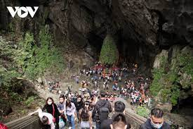

Cả quần thể kiến trúc chùa Hương nằm rải rác trong thung lũng suối Yến, gồm có chùa Ngoài, và chùa Trong.
Từ bến Đục ngược lên suối Yến, du khách sẽ đến được chùa Ngoài, hay vẫn thường được gọi là chùa Trò. Chùa Ngoài có tam quan được cất trên 3 khoảng sân vô cùng rộng lớn được lát gạch hoàn toàn, cùng với một tháp chuông 3 tầng mái được dựng ở sân thứ ba. Điểm nhấn đặc biệt nhất của khối kiến trúc này nằm ở hai đầu hồi tam giác được lộ ra ở trên tầng cao nhất, điển hình cho lối kiến trúc cổ xưa.

Chùa hương với kiến trúc cổ kính
Được bao quanh bởi thung lũng suối Yến, cả quần thể chùa Hương gồm có chùa Ngoài và chùa Trong. Chùa Ngoài hay còn được gọi là chùa Trò, với tam quan được cất trên khoảng sân rộng lớn và tháp chuông được dựng ở sân thứ ba. Nếu như chùa Ngoài được cải tạo dưới bàn tay của con người, thì chùa Trong nằm trong động Hương Tích là tác phẩm tuyệt diệu của tạo hóa với những hang động cổ kỳ vĩ đẹp lay động lòng người. Đường lên thăm động Hương Tích du khách cần phải đi qua các bậc đá cheo leo, dân gian quan niệm rằng, có khổ ải mới đến được chân phương. Vì vậy nơi đây chưa bao giờ vì sự khó khăn của địa hình mà cản trở bước chân của các tín đồ đến đây hành hương. Động Hương Tích khi xưa còn là nơi vua chúa thường hay lui tới vãn cảnh, năm 1770 Tĩnh Đô Vương Trịnh Sâm đã lưu lại nơi đây 5 chữ Hán “Nam thiên đệ nhất động”, từ đó danh xưng này được lưu truyền cho đến ngày hôm nay.
Lối vào động Hương Tích
Lối vào động, trên vách đá cao bên trái có khắc năm chữ “Nam thiên đệ nhất động” là của chúa Tĩnh Đô Vương Trịnh Sâm đặt bút đề tháng ba năm Canh Dần (1770) khi nhà Chúa tuần du Sơn Nam. Trong động những khối thạch nhũ to nhỏ được người xưa thổi hồn đặt tên theo hình dáng tự nhiên: Trên trần động, rủ xuống chín nhũ đá hình chín con rồng chầu một khối thạch nhũ dưới nền động, gọi là “cửu long Tranh Châu “, Núi Đụn Gạo, Cây Vàng, Cây Bạc, con trâu, con lợn, ao bèo, buồng tằm, né kén, Núi Cô, Núi Cậu và cả Bầu Sữa Mẹ thánh thót nhỏ như đếm thời gian mà du khách đến đây ai cũng mong mình may mắn có được một giọt lấy khước.
Bên trong động Hương Tích
Ngoài những gì thiên nhiên ban tặng cho động hương tích còn có rất nhiều điểm do con người tạo ra như : Chiếc bệ đá hoa sen được điêu khắc rất tinh vi, bốn góc bệ có bốn hình người đóng khố giơ tay lên cao như đang muốn đỡ lấy bệ. Bệ đá này do hai bà phi tần của vương triều Lê – Trịnh công đức, không ghi rõ niên đại chỉ ghi lại quý danh. Còn những pho tượng đồng thờ trên tam bảo động Hương Tích là do gia đình bà Trịnh Thị Ngọc Du hiệu Diệu Hương Viên Kim Chân Nhân công đức. Tượng đúc năm ất dậu (1705) niên hiệu Vĩnh Thịnh năm thứ nhất đời Vua Lê Dụ Tông. Năm Đinh Hợi (1767) niên hiệu Vua Lê Cảnh Hưng năm thứ 28, gia đình quan Tả Đô đốc thái phủ Liêu Quận công Vũ Đình Trác cùng phu nhân Nguyễn Thị Tân công đức đúc pho tượng Phật Bà Quán Thế Âm (nhiều tay ) thờ hàng giữa ở tam bảo động. Riêng pho tượng Chúa Bà Quan Âm tọa sơn tạc đá xanh, do gia đình ông Nguyễn Huy Nhật tước Nhật Quang Hầu và phu nhân là Nguyễn Thị Huề hiệu Thiện Cơ công đức năm Qúy Sửu (1793) là một pho tượng đá quý, có những đường nét tạc khắc tuyệt đẹp dưới triều nhà Nguyễn Tây Sơn, hiện thờ giữa tam bảo.…
Ngồi trên con thuyền độc mộc nhỏ trôi theo dòng nước suối, mỗi mùa bạn lại được ngắm nhìn vẻ đẹp của một loài hoa khác nhau. Là màu đỏ tươi tắn, rực rỡ của hoa gạo mỗi khi hè về, chút tím nhạt mộng mơ của hoa súng mỗi dịp cuối thu hay sắc trắng tinh khôi ngập trời của hoa ban, hoa mận mỗi độ xuân về. Cũng bởi vậy mà bến đò bên con suối nhỏ lúc nào cũng tấp nập người đến thăm..
4. Những danh thắng của chùa Hương
Suối Yến
Suối Yến chảy giữa hai ngọn núi, dài 3km. Khi đi dọc theo suối Yến, du khách sẽ được chiêm ngưỡng cảnh sắc thiên nhiên tuyệt đẹp, cánh đồng lúa xanh ngút ngàn, những ngọn núi đá vôi hùng vĩ,....Từ trên thuyền bạn sẽ thấy bên trái núi Phượng Hoàng và núi Đôi Chèo giống nhu con trăn Ấn Độ; bên phải là núi Ngũ Nhạc và Đền Trình.>
Đền Trình
Đền Trình còn gọi là Đền Thượng Quan, cách bến Đục khoảng 300 mét là điểm dừng chân đầu tiên của chùa Hương. Đền Trình nằm dưới chân núi Ngũ Nhạc, thờ tướng Tư Mã - người có công giúp vua Hùng bảo vệ dân tộc khỏi giặc ngoại xâm. Ngôi đền đã bị phá hủy nghiêm trọng trong chiến tranh chống thực dân Pháp và được xây dựng lại vào năm 1992.
Động Hương Tích
Bước vào chùa Trong du khách sẽ không khỏi ngạc nhiên trước nhiều bức tượng Phật được tạc từ đá xanh. Bức tượng ấn tượng nhất có lẽ là tượng Phật Bà Quan Âm. Bên trong hang động còn có rất nhiều nhũ đá và măng đá tự nhiên. Có hai sự lựa chọn để đến động Hương Tích đó là leo núi hoặc đi cáp treo. Hành trình leo núi vượt dốc sẽ kéo dài 1 giờ đồng hồ với hàng nghìn bậc đá, đòi hỏi du khách phải có sức khỏe tốt. Nếu di chuyển bằng cáp treo thì bạn chỉ mất 10 - 15 phút để đến cổng vào hang động. Ngồi trong cabin, bạn dễ dàng chiêm ngưỡng vẻ đẹp lãng mạn của cảnh quan bên dưới với núi rừng hùng vĩ.
Chùa Thiên Trù
Chùa Thiên Trù là điểm đến đầu tiên sau khi bạn xuống thuyền, còn được gọi là chùa Ngoài. Đây là một trong những địa điểm chính của toàn bộ khu phức hợp, là nơi diễn ra lễ khai mạc lễ hội chùa Hương. Bên cạnh kiến trúc đặc biệt và giá trị tôn giáo thì chùa Thiên Trù còn có ngôi Bảo tháp Viên Công - nơi an táng thiền sư Viên Quang - là người khai sơn lập chùa.
Chùa Giải Oan
Chùa Giải Oan nằm ở trung đường giữa chùa Thiên Trù và động Hương Tích. Với ý nghĩa “ngôi chùa của sự xuất hiện” đây là nơi mà người dân tin rằng các vị thần có thể thanh lọc tâm hồn, chữ khỏi mọi sự đau khổ, ban phúc cho gia đình không con. Điểm nổi bật của ngôi chùa đó là suối Giải Oan từ chín nguồn chảy ra và nước trong giếng Long Tuyền trong xanh tự nhiên